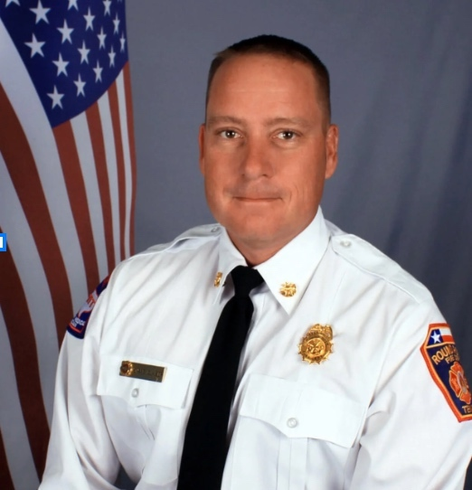

Signature fund
The 1884 Fund
A dedicated emergency-relief fund for Round Rock fire families facing medical travel, care needs, home repairs after disaster, financial hardship, and family crises.
Help launch the fund →Round Rock, Texas · Est. 2025
Supporting Round Rock firefighters and their families — every day, in every way. Born from an outpouring of care after profound loss, RRFF is building structured, confidential, and sustainable support for fire families.
Our mission
The Round Rock Fire Foundation provides resources, care, and community-driven programs that support fire families from the start of their careers to retirement, ensuring they thrive in every aspect of their lives.
RRFF was founded by fire families, for fire families. Our work focuses on family integration, resilience, and long-term care so firefighters and their loved ones are cared for in lasting, meaningful ways.
“When we lost our daughter, Bailey, the love and support from our fire family and our community showed us what true strength looks like.” — Wylie Brownell
Our programs
Signature fund
A dedicated emergency-relief fund for Round Rock fire families facing medical travel, care needs, home repairs after disaster, financial hardship, and family crises.
Help launch the fund →Community engine
Blazing Paddles, launch gatherings, sponsorships, and community-hosted events that raise funds, deepen relationships, and make RRFF visible in the community.
See events →Linked resource
A chaplain-led blog and support resource where fire families can find encouragement, reflection, and care-centered guidance from the Chaplain.
Visit Chap’s Corner →Events
RRFF events are more than fundraisers. They are gathering places for neighbors, businesses, fire families, sponsors, and volunteers to build the relationships that make lasting care possible.
Blazing Paddles and future gatherings will help launch The 1884 Fund, expand support for firefighters’ mental health, and invite the community into the mission in a meaningful way.
Explore RRFF eventsChap’s Corner
Chap’s Corner is the Chaplain’s blog and support area for fire families. RRFF does not write or manage the posts, but we make the resource easy to find because encouragement, reflection, and trusted guidance matter in this work.
This linked resource gives firefighters and their loved ones a place to read supportive messages and connect with the chaplain-led care available to them.
Visit Chap’s CornerJoin our community
RRFF events invite neighbors, sponsors, volunteers, and fire families to come together in support of The 1884 Fund, firefighters’ mental health, and lasting care for the people who serve.
Signature fundraiser
A community pickleball tournament where sponsors, players, volunteers, and fire families gather to raise support for RRFF programs.
Foundation gathering
An evening that introduces the purpose of The 1884 Fund and invites neighbors and community members to become Founding Legacy Donors.
Become a founding donor →Family support
A weekend for firefighter spouses focused on connection, resilience, and the lasting care that helps fire families thrive together.
Learn more →Get involved
Become part of the founding donor circle helping launch The 1884 Fund and build lasting support for fire families.
Become a Legacy Circle donor → 02Help with events, donor outreach, family-support logistics, and the behind-the-scenes work that keeps the mission moving.
Raise your hand → 03Sponsor, attend, volunteer, or host a gathering that helps make RRFF visible and fund the mission.
See events → 04For Round Rock firefighters and their families — confidential intake for emergency assistance and wellness referrals.
Start a request →In their words
After tragedy, fire families and neighbors showed up with meals, presence, practical help, and a kind of care that changed what we believed was possible. RRFF exists to turn that gratitude into structure, so support does not depend on timing, circumstance, or knowing who to call.
Built around a kitchen table by fire families and community members, the Foundation carries a simple promise: rooted in legacy, driven by compassion, and powered by community.
Read more stories
“The Round Rock Fire Foundation represents the very best of our community — neighbors taking care of neighbors.”
— Fire Chief, Round Rock Fire Department
The Foundation stands as a powerful example of what happens when a community decides to take care of its own. Through support of our firefighters and their families, RRFF helps ensure those who protect us are never left to face challenges alone.
Read the Full LetterGiving partners
2025 Blazing Paddles sponsors
Join the email list for stories, events, and one annual ask. We won’t flood your inbox.